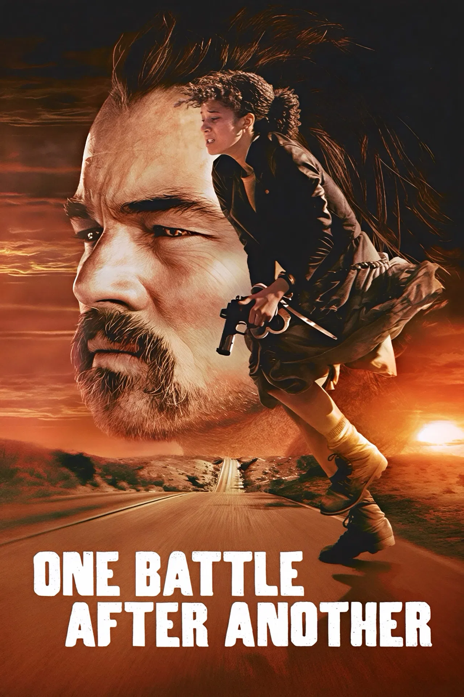

One Battle After Another
-
Deskripsi Singkat: Film epik perpaduan aksi, thriller, dan drama satir politik tentang mantan pejuang revolusioner bawah tanah yang harus kembali bertarung melawan masa lalunya.
-
Aktor Pemeran Utama: Leonardo DiCaprio (Bob Ferguson), Sean Penn (Kolonel Lockjaw), Chase Infiniti (Willa Ferguson), Teyana Taylor (Perfidia Beverly Hills), Benicio Del Toro (Sensei Sergio)
-
Pengarang Cerita: Angga Dwimas Sasongko & Husein M. Atmodjo
Sutradara: Paul Thomas Anderson
-
Rating:
-
Sinopsis: Pat Calhoun (yang kini menyamar sebagai Bob Ferguson) adalah seorang mantan pejuang revolusi radikal yang hidup menyendiri (off-grid) dan terus diliputi paranoia. Ia membesarkan putri remajanya yang tangguh, Willa, seorang diri setelah bersembunyi dari incaran pemerintah selama 16 tahun. Kehidupan mereka yang tenang hancur ketika musuh bebuyutannya, seorang kolonel kejam bernama Steven Lockjaw, kembali memburu sisa-sisa anggota kelompoknya. Ketika Willa diculik, Bob terpaksa keluar dari persembunyiannya dan memicu rentetan aksi kejar-kejaran epik serta baku tembak demi menyelamatkan sang anak.